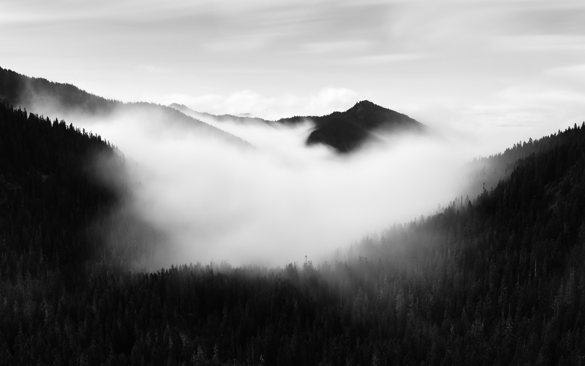

STORYTELLING / NATUR ERLEBENNeue Perspektiven auf die Natur
Tiroler Flüsse, Wildtiere, Fledermäuse, Alpenlandschaften und Filmaufnahmen aus Projekten bilden die Themenwelt für den geplanten Filmheader.
Die Filmübersicht wird ergänzt, sobald die eigenen Filme und Aufnahmen vorliegen. Aktuell ist kein Video eingebunden.